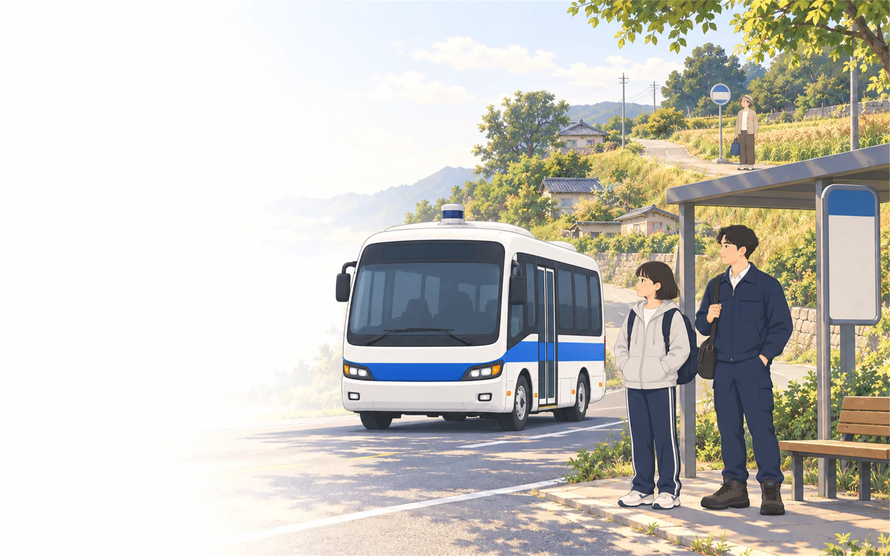

AI 마을버스 운영단
This stop is…
진행은 이 브라우저에 자동으로 저장돼요. 새로고침하거나 창을 닫았다가 열어도 ‘이어하기’로 계속할 수 있어요.

외부 인공지능이 아니라, 알려진 기본 수요로 후보 계획을 비교하는 규칙 기반 추천이에요. 후보 노선은 최대 30개이고, 버스 한 대씩 바꿔 보며 가장 좋아지는 계획을 최대 3번 고릅니다. 가장 좋은 답을 보장하지 않아요.
AI의 예상은 추가 사건 없는 기본 수요 기준이에요. 실제 운행에는 갑자기 늘어난 수요나 청원 같은 사건이 생길 수 있어 결과가 달라질 수 있어요.
운임·비용·불만·신뢰 수치는 게임을 위해 정한 값이에요. 실제 교통이나 재정, 주민 마음을 잰 값이 아니에요.
건너뛴 기회는 ‘변경 없이 계속’으로 기록되고, 이번 운행은 끝까지 그대로 진행돼요.
저장된 진행과 지금까지의 운행 기록이 사라져요.